Data Analytics with Apache Spark for Azure HDInsight
Overview
Today, data is being collected in ever-increasing amounts, at ever-increasing velocities, and in an ever-expanding variety of formats. This explosion of data is colloquially known as the Big Data phenomenon.
In order to gain actionable insights into big-data sources, new tools need to be leveraged that allow the data to be cleaned, analyzed, and visualized quickly and efficiently. Azure HDInsight provides a solution to this problem by making it exceedingly simple to create high-performance computing clusters provisioned with Apache Spark and members of the Spark ecosystem. Rather than spend time deploying hardware and installing, configuring, and maintaining software, you can focus on your research and apply your expertise to the data rather than the resources required to analyze that data.
Apache Spark is an open-source parallel-processing platform that excels at running large-scale data analytics jobs. Spark’s combined use of in-memory and disk data storage delivers performance improvements that allow it to process some tasks up to 100 times faster than Hadoop. With Microsoft Azure, deploying Apache Spark clusters becomes significantly simpler and gets you working on your data analysis that much sooner.
In this lab, you will experience Apache Spark for Azure HDInsight first-hand. After provisioning a Spark cluster, you will use the Microsoft Azure Storage Explorer to upload several Jupyter notebooks to the cluster. You will then use these notebooks to explore, visualize, and build a machine-learning model from food-inspection data — more than 100,000 rows of it — collected by the city of Chicago. The goal is to learn how to create and utilize your own Spark clusters, experience the ease with which they are provisioned in Azure, and, if you're new to Spark, get a working introduction to Spark data analytics.
Objectives
In this hands-on lab, you will learn how to:
- Deploy an HDInsight Spark cluster
- Work with content stored in Azure Blob Storage and accessed by the Spark cluster as an HDFS volume
- Use a Jupyter notebook to interactively explore a large dataset
- Use a Jupyter notebook to develop and train a machine-learning model
- Delete a Spark cluster to avoid incurring unnecessary charges
Prerequisites
The following are required to complete this hands-on lab:
Exercises
This hands-on lab includes the following exercises:
Estimated time to complete this lab: 60 minutes.
Exercise 1: Create a Spark Cluster on HDInsight
In this exercise, you will create an HDInsight cluster running Apache Spark. Spark is renowned for its versatility and is built for speed, performing some operations 100 times faster than Hadoop.
Go to the Azure Portal and sign in using your Microsoft account.
-
Click + New in the upper-left corner. Then click Intelligence + Analytics, followed by HDInsight.
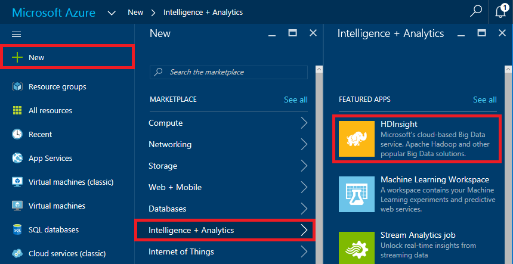
Creating an HDInsight cluster
-
In the Cluster Name box, enter a unique DNS name for the cluster and make sure a green check mark appears next to it indicating that the name is valid and unique.
In case someone else in the lab selects the same name, try to make it as unique as possible by including birth dates, initials, and anything else you care to add. The name you entered may be unique right now, but it might NOT be unique a few minutes into the deployment.
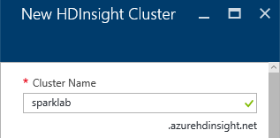
Specifying the cluster name
-
Click Select Cluster Type to open a "Cluster Type configuration" blade. In that blade, select Spark as the Cluster Type. Under Version, select Spark version 1.6.2 (HDI 3.5). Then click Standard to select a Cluster Tier, and finish up by clicking the Select button at the bottom of the blade.
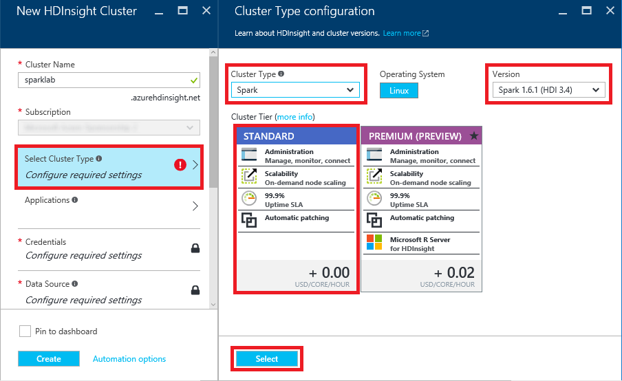
Specifying the cluster type
-
Click Credentials to open a "Cluster Credentials" blade. Leave Cluster Login Username set to "admin" and set the Cluster Login Password to "A4rsparkdemo!". Enter "sshuser" (without quotation marks) for the SSH Username, make sure SSH Authentication Type is set to Password, and enter "A4rsparkdemo!" (again without quotation marks) again for the SSH Password. Then click the Select button at the bottom of the blade.
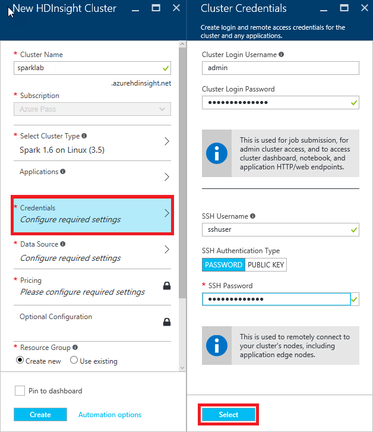
Specifying cluster credentials
-
Click Data Source to open a "Data Source" blade. Leave Selection Method set to From all subscriptions and enter a unique storage-account name in the box below Create a new storage account. (Once more, try to make the name as unique as possible by including birth dates or other values that aren't likely to be used by someone else.) For Choose Default Container, enter "sparklab" (without quotation marks). Select the Location nearest you, and then click the Select button at the bottom of the blade.
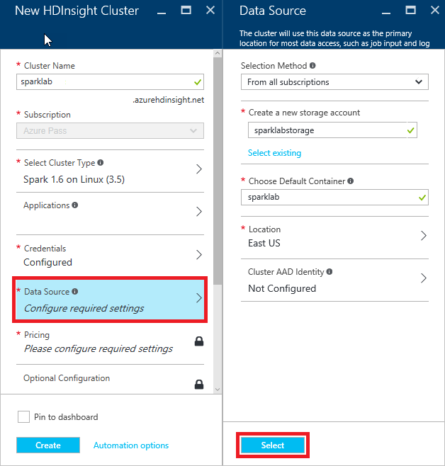
Specifying the data source
-
Click Node Pricing Tiers to open a "Pricing" blade. Make sure Number of Worker nodes is set to 4 and accept the default values everywhere else. Then click the Select button at the bottom of the blade.
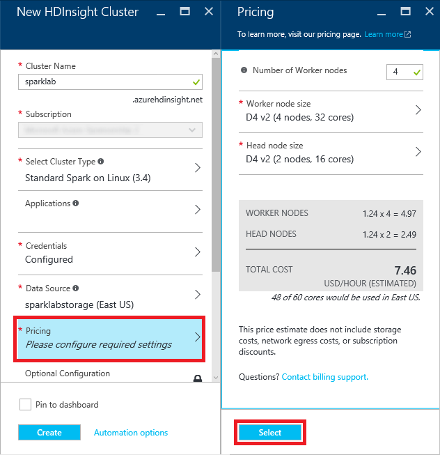
Specifying the node pricing tier
-
Select Create new under Resource Group and enter the resource-group name "SparkLabResourceGroup" (without quotation marks). Then click the Create button at the bottom of the blade to start deploying the cluster.
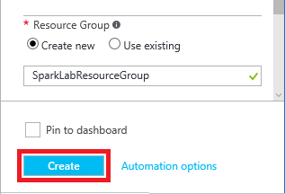
Specifying a resource group and creating the cluster
-
Deploying an HDInsight cluster can take 20 minutes or more. You can monitor the status of the deployment by opening the resource group's blade. Click Resource group in the ribbon on the left side of the portal, and then click the resource group name ("SparkLabResourceGroup") to open the blade. "Deploying" will change to "Succeeded" when the deployment has completed successfully.
Click the browser's Refresh button every few minutes to update the deployment status. Clicking the Refresh button in the resource-group blade refreshes the list of resources in the resource group, but does not reliably update the deployment status.

Monitoring the deployment
In this exercise, you learned how to provision an HDInsight Spark cluster on Azure, and about some of the options you can choose from when doing so. Wait for the deployment to finish, and then proceed to the next exercise.
Exercise 2: Upload Jupyter notebooks to the cluster
You will be using Jupyter notebooks to do the data-exploration and machine-learning portions of this lab. The notebooks have been prepared for you ahead of time, and need to be uploaded to your cluster. In this exercise, you’ll use the cross-platform Microsoft Azure Storage Explorer to upload the notebooks. If Storage Explorer isn't installed on your computer, take the time to install it now.
Start the Microsoft Azure Storage Explorer. If you're prompted for credentials, sign in with the user name and password for your Microsoft account.
-
In the Storage Explorer window, find the storage account that was created when you deployed the Spark cluster (the storage account name you entered in Exercise 1, Step 6.) Expand the list of items underneath that storage account and click the small arrow next to Blob Containers to show a list of containers. Then click the container named "sparklab." Notice that it contains several folders that were created during the provisioning process. This is the root folder for your Spark cluster.
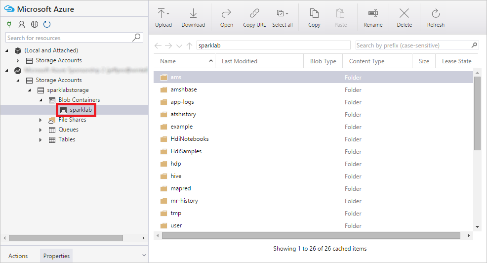
Contents of the "sparklab" container
-
Double-click the folder named "HdiNotebooks." The is the root folder for the cluster's Jupyter notebooks.
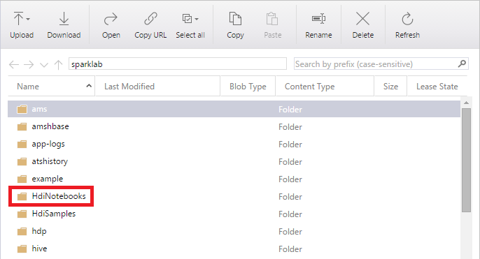
Opening the "HdiNotebooks" folder
-
Click the Upload button and select Upload Files from the menu.
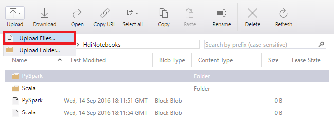
Uploading notebooks to blob storage
-
Click the ... button to the right of the field labeled "Files." In the ensuing dialog, navigate to this lab's "resources " subdirectory and select the three .ipynb files in that subdirectory. Then close the dialog and click the Upload button.

Uploading .ipynb files
-
Confirm that all three files were uploaded to the "HdiNotebooks" folder.

Uploaded notebooks
The notebooks are uploaded and ready to go. Let's put them to work.
Exercise 3: Work with Jupyter Notebooks
Jupyter notebooks are Web applications that allow you to create shareable, interactive documents containing text, equations, code, and data visualizations. Jupyter notebooks are proving to be extraordinarily useful for data scientists exploring and manipulating data sets in order to gain insights and share results. Jupyter supports several programming languages through the use of installable interpreters called kernels. Spark clusters on HDInsight include the Spark and PySpark kernels for Scala and Python, respectively. In this exercise, you will learn how to access Jupyter notebooks in your Spark cluster and acquire basic skills for using them.
-
In the Azure Portal, return to the blade for the resource group ("SparkLabResourceGroup") that contains the cluster. In the list of resources that belong to the resource group, click the HDInsight cluster.
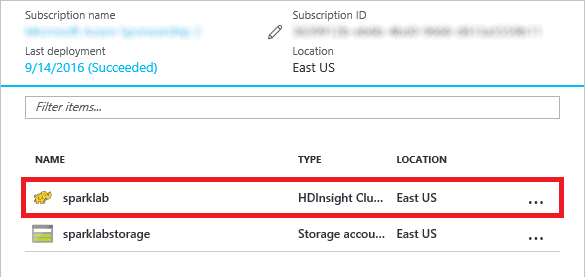
Opening the cluster
-
In the blade for the HDInsight Spark cluster, click Cluster Dashboards.
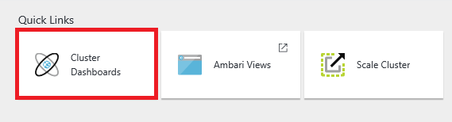
Opening the cluster dashboards
-
In the ensuing blade, click Jupyter Notebook.

Opening a Jupyter notebook
-
When prompted for a user name and password, log in with your cluster credentials ("admin" and "A4rsparkdemo!") from Exercise 1, Step 5.
If you mistype the password and are greeted with a 403 Forbidden error, start a new incognito or private browsing session, go to the Azure Portal, and open the Jupyter notebook again.
-
A new browser window (or tab) will open showing the Jupyter notebooks in your cluster. Here, you can manage your notebooks, upload new ones, and more. You can also see which notebooks are currently “running”, meaning they are currently consuming resources in your Spark cluster. Confirm that you see the notebooks you uploaded in Exercise 2. Then click 1 – Working with Jupyter Notebooks.ipynb to open that notebook.
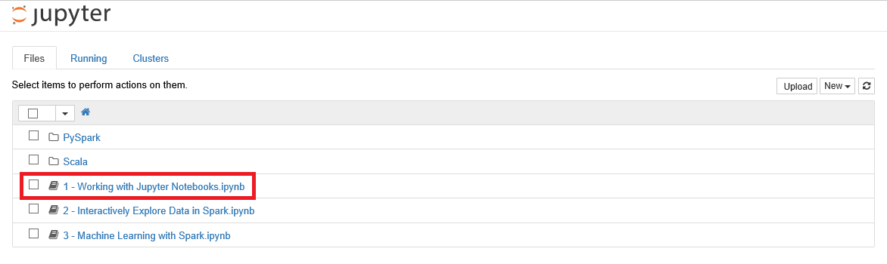
Opening Notebook 1
-
Jupyter notebooks consist of a series of cells into which you can insert commands, HTML, or Markdown text. The notebook you opened contains the remaining instructions for this exercise. Follow the instructions in the notebook to complete Exercise 3.

Working with Jupyter notebooks
Once you have completed the steps in the notebook, close the browser window in which the notebook is displayed and return to the Azure Portal.
Exercise 4: Interactively explore data in Spark
One of the ways in which researchers and data scientists use Jupyter notebooks in Spark is to explore datasets in order to understand their content and structure. Notebooks can be used to visualize data, as well as to apply structure to it. DataFrames are particularly helpful in this regard because they make it simple to apply schemas to raw data. DataFrames can also be used to create temporary tables that can be queried using Apache Hive SQL, also known as HiveQL or simply HQL. Libraries such as matplotlib, which is already provisioned on your Spark cluster, provide support for graphing, charting, and visualizing datasets and query results. Put them all together and you have a powerful set of tools for exploring and analyzing datasets large and small.
You have already learned how to access and run Spark notebooks on your Azure HDInsight Spark cluster. In this exercise, you will take the learning a level deeper by using DataFrames, HiveQL, and matplotlib to explore food-inspection data from the city of Chicago. In addition to analyzing the contents of the data, you will apply structure to it, query it, and graph it to discover key relationships.
Go back to the browser window showing the Jupyter notebooks in your cluster. If necessary, open the Azure Portal and follow the steps in the previous exercise to find the notebooks.
-
Click 2 – Interactively Explore Data in Spark.ipynb to open that notebook. Then follow the instructions in the notebook to complete Exercise 4.

Exploring data in Spark
Once you have completed the steps in the notebook, close the browser window in which the notebook is displayed and return to the Azure Portal.
Exercise 5: Use Jupyter to develop a machine-learning model
In the previous exercise, you explored a set of food-inspection data and obtained key insights by looking at it in different ways. However, sometimes the sheer volume and complexity of the data makes relationships difficult to identify. One solution is machine learning, a technique that algorithmically finds patterns in data and exploits those patterns to perform predictive analytics.
Your Azure HDInsight Spark cluster includes several libraries from which you can build sophisticated machine-learning models. In this exercise, you will use some of these tools to build, train, and score a machine-learning model using the food-inspection data featured in the previous exercise. In the model, you will use a popular classification algorithm to predict which restaurants will be successful and which ones won't based on certain features of the input data — information that is difficult to discern simply by examining the data.
Go back to the browser window showing the Jupyter notebooks in your cluster.
-
Click 3 - Machine Learning with Spark.ipynb to open that notebook. Then follow the instructions in the notebook to complete Exercise 5.

Machine learning with Spark
Once you have completed the steps in the notebook, close the browser window in which the notebook is displayed and return to the Azure Portal.
Exercise 6: Remove the HDInsight Spark cluster
When you are finished using an HDInsight Spark cluster, you should delete it because you are charged for it while it exists, regardless of whether it's doing any work. In this exercise, you will delete the resource group created in Exercise 1 when you created the cluster. Deleting the resource group deletes everything in it and prevents any further charges from being incurred for it.
-
In the Azure Portal, open the blade for the "SparkLabResourceGroup" resource group that holds the cluster. Then click the Delete button at the top of the blade.
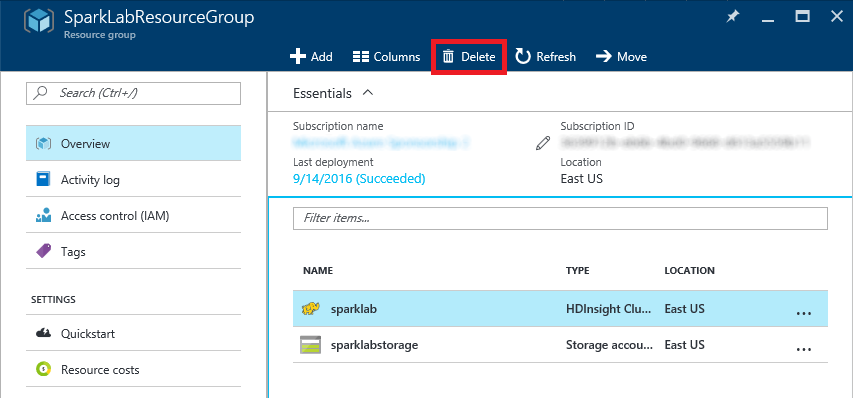
Deleting a resource group
For safety, you are required to type in the resource group's name. (Once deleted, a resource group cannot be recovered.) Type the name of the resource group. Then click the Delete button to remove all traces of this lab from your account.
After a few minutes, the cluster and all of its resources will be deleted. Billing stops when you click the Delete button, so you're not charged for the time required to delete the cluster. Similarly, bulling doesn't start until a cluster is fully and successfully deployed.
Summary
Here is a summary of what you learned in this lab:
- Apache Spark for Azure HDInsight is Microsoft Azure's implementation of Hadoop, Spark, and supporting big-data tools
- The Azure Portal makes it easy to create, configure, and delete HDInsight Spark clusters
- HDInsight Spark clusters come with Jupyter preinstalled
- Jupyter notebooks provide a powerful means for querying, analyzing, and visualizing data
- HDInsight Spark clusters should be deleted when they're no longer needed to avoid incurring unwanted charges
With Apache Spark for Azure HDInsight, high-performance computing clusters with all the tools you need to handle big data are just a few button clicks away. It's just one example of why cloud computing is changing the face of research.
Copyright 2016 Microsoft Corporation. All rights reserved. Except where otherwise noted, these materials are licensed under the terms of the MIT License. You may use them according to the license as is most appropriate for your project. The terms of this license can be found at https://opensource.org/licenses/MIT.